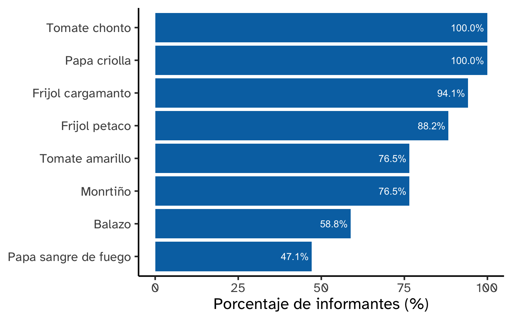
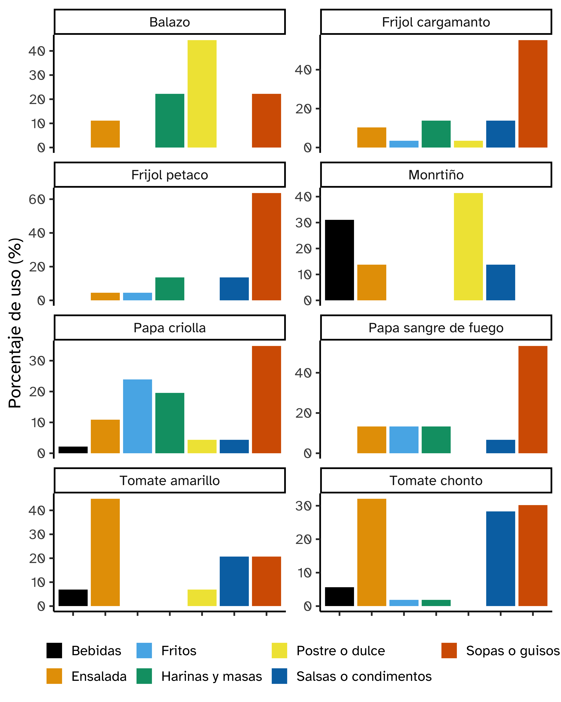

Informantes
17
Sexo femenino
11
Edad mediana informantes
25
Nombre de las plantas
Nombre común | Nombre científico |
|---|---|
Tomate chonto | Lycopersicon esculentum |
Tomate amarillo | Lycopersicon esculentum var. indet |
Balazo | Monstera deliciosa |
Frijol petaco | Phaseolus coccineus |
Frijol cargamanto | Phaseolus vulgari |
Papa criolla | Solanum phureja |
Papa sangre de sol | Solanum tuberum var. indigena |
Mortiño | Tibouchina mollis |
Porcentaje de plantas conocidas

Porcentaje de usos por planta
